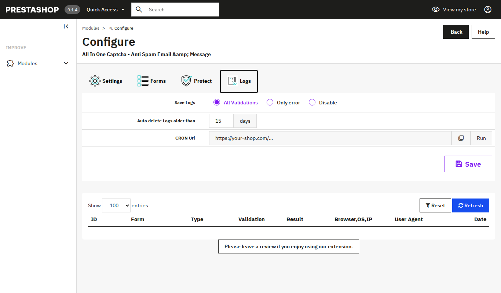

Logs
5.1 Log settings
Open the Logs tab to choose what the module records.
- Save Logs: choose All Validations, Only error or Disable.
- Auto delete Logs older than: set a number of days. The default is 15.
- CRON Url: a ready link you can copy or run to clean up old logs.

5.2 The log list
Below the settings you see a table of recorded checks. The columns are ID, Form, Type, Validation, Result, Browser,OS,IP, User Agent and Date. You can filter the list by result.
Tip Click Save at the bottom of the tab to keep your log settings.